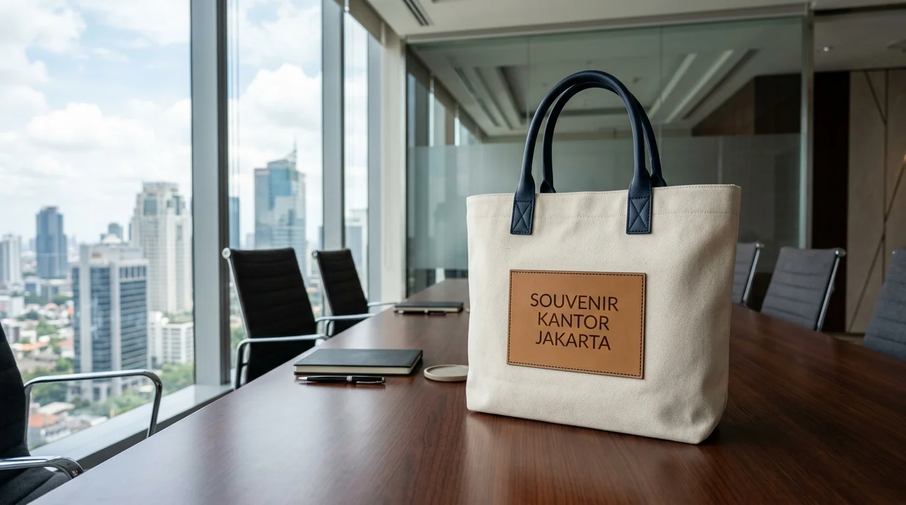
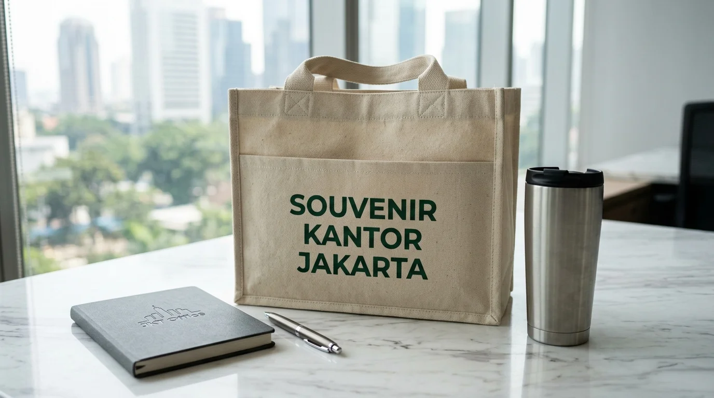

Goodie Bag Perusahaan Custom Seminar Event Berkualitas
 Tim Redaksi Souvenir Kantor Jakarta
5 September 2026
5 Menit Baca
Tim Redaksi Souvenir Kantor Jakarta
5 September 2026
5 Menit Baca

- Penggunaan goodie bag perusahaan meningkatkan ingatan merek (brand recall) peserta seminar hingga puluhan persen.
- Pilihan material ramah lingkungan seperti kanvas dan blacu memberikan nilai estetika premium dan daya tahan tinggi.
- Cetak logo kustom dengan teknik sablon presisi atau bordir memperkuat identitas profesional perusahaan.
- Pemesanan paket merchandise terpadu di Souvenir Kantor Jakarta memberikan efisiensi alokasi anggaran promosi B2B.
- Kapasitas tas yang proporsional memastikan seluruh item seminar kit tersusun rapi dan mudah dibawa peserta.
Goodie bag perusahaan custom adalah tas promosi khusus berbahan spunbond, kanvas, atau blacu yang dirancang untuk membawa paket seminar kit dan meningkatkan eksposur brand.
- Mengapa Goodie Bag Perusahaan Custom Sangat Efektif untuk Event Korporat?
- Apa Saja Pilihan Material Terbaik untuk Pembuatan Goodie Bag Perusahaan?
- Bagaimana Langkah Menyusun Isi Seminar Kit di Dalam Goodie Bag Perusahaan?
- Faktor Apa Saja yang Memengaruhi Kualitas Cetak Logo pada Tas Promosi?
- Pertanyaan Populer Seputar Goodie Bag Perusahaan
- Kesimpulan Praktis
Mengapa Goodie Bag Perusahaan Custom Sangat Efektif untuk Event Korporat?
Goodie bag perusahaan custom sangat efektif untuk event korporat karena berfungsi sebagai media promosi berjalan yang fungsional, memberikan kesan profesional kepada peserta seminar, serta menyimpan seluruh materi presentasi dan merchandise secara terorganisir. Berdasarkan data Corporate Event Marketing Report 2025-2026, sebanyak 88,4% peserta seminar menyimpan dan menggunakan kembali tas promosi berbahan berkualitas tinggi dalam aktivitas harian mereka selama lebih dari 8 bulan. Laporan Indonesia Promotional Product Survey 2025 juga mencatat bahwa penggunaan tas cinderamata berlogo kustom meningkatkan dampak retensi merek perusahaan sebesar 42,3% dibanding pemberian suvenir tanpa kemasan khusus.
Menyediakan kemasan yang menarik bagi perlengkapan acara bukan sekadar tentang kemudahan membawa barang, melainkan investasi strategis dalam membangun citra positif entitas bisnis. Ketika peserta membawa tas promosi di area publik, logo dan identitas perusahaan akan terlihat oleh audiens yang lebih luas secara alami. Oleh karena itu, memilih penyedia pembuatan tas promosi tepercaya di Souvenir Kantor Jakarta menjadi langkah krusial untuk menyukseskan agenda kegiatan korporat Anda.
Retensi Merek 88,4%
Dipakai harian lebih dari 8 bulan oleh peserta acara+42,3% Brand Recall
Meningkatkan dampak ingatan merek dibanding suvenir polosMobile Billboard
Media promosi berjalan yang memperluas jangkauan brandTabel perbandingan material pembuatan tas promosi korporat berikut dapat menjadi panduan pemilihan:
| Jenis Material Tas | Tingkat Kekuatan | Nilai Estetika Visual | Rekomendasi Penggunaan Event |
|---|---|---|---|
| Spunbond (Non-Woven) | Cukup Kuat (Ramah Anggaran) | Bersih & Minimalis | Seminar Massal & Pameran Publik |
| Kain Blacu | Kuat & Fleksibel | Klasik & Eco-Friendly | Workshop Kreatif & Training Intern |
| Kain Kanvas Premium | Sangat Kuat & Tebal | Premium & Elegan | Konferensi Direksi & Event VIP |
| Material Denier (D300/D600) | Tahan Air & Sangat Kuat | Sporty & B2B Profesional | Rafting / Outbound & Simposium |
Apa Saja Pilihan Material Terbaik untuk Pembuatan Goodie Bag Perusahaan?
Pilihan material terbaik untuk pembuatan goodie bag perusahaan meliputi bahan spunbond berbobot 75gsm hingga 100gsm, kain blacu serat alami, kain kanvas tebal, serta bahan sintetis tahan air seperti denier D300 dan D600. Pemilihan bahan harus disesuaikan dengan bobot isi paket seminar kit, profil peserta yang hadir, serta alokasi anggaran promosi yang ditetapkan oleh manajemen.
Keunggulan masing-masing material dapat diuraikan sebagai berikut:
Spunbond Non-Woven
Pilihan paling ekonomis yang ramah lingkungan, cocok untuk dibagikan dalam jumlah besar pada kegiatan pameran atau seminar umum.
Kain Blacu Off-White
Memberikan nuansa natural yang kental, sangat diminati oleh perusahaan yang mengusung tema keberlanjutan dan lingkungan.
Kain Kanvas Premium
Menampilkan struktur kain yang padat dan kokoh, ideal untuk memberikan kesan eksklusif kepada mitra bisnis strategis.
Polyester Denier (D300/D600)
Memiliki ketahanan fisik ekstra tebal dan sifat kedap air, sangat sesuai untuk kegiatan luar ruangan atau pelatihan intensif.

Bagaimana Langkah Menyusun Isi Seminar Kit di Dalam Goodie Bag Perusahaan?
Langkah menyusun isi seminar kit di dalam goodie bag perusahaan dilakukan dengan menempatkan barang berukuran besar di bagian belakang, menata agenda note dan pulpen di bagian tengah, serta menyisipkan voucher atau brosur kecil di bagian depan agar mudah diakses. Penataan yang sistematis memberikan pengalaman pembongkaran paket (unboxing) yang berkesan bagi para tamu undangan.
Item esensial yang wajib ada di dalam tas promosi acara mencakup:
- Buku Catatan dan Pulpen Kustom: Sarana utama bagi peserta untuk mencatat poin penting selama sesi presentasi berlangsung. Anda dapat melihat berbagai pilihan di notebook souvenir kantor dan pulpen custom logo.
- Tumbler Minum Stainless: Souvenir bermanfaat yang mendukung program pengurangan sampah plastik sekali pakai. Pilihan model tersedia di tumbler custom logo.
- Flashdisk atau Memory Card: Media penyimpanan digital yang berisi file materi presentasi dan profil profil perusahaan.
- Kartu Perdana atau Voucher Produk: Nilai tambah yang memberikan insentif langsung bagi peserta kegiatan.
Untuk mengamankan pasokan wadah souvenir berkualitas dengan hasil cetak presisi, hubungi tim penyedia Souvenir Kantor Jakarta sekarang juga dan dapatkan penawaran harga grosir B2B terbaik.
Faktor Apa Saja yang Memengaruhi Kualitas Cetak Logo pada Tas Promosi?
Faktor yang memengaruhi kualitas cetak logo pada tas promosi meliputi teknik pencetakan yang digunakan (sablon manual, digital transfer film, atau bordir komputer), kerapatan serat kain, ketajaman warna tinta, serta kepresisian posisi cetak pada permukaan tas. Penggunaan cat sablon berkualitas tinggi memastikan logo perusahaan tidak gampang mengelupas atau pudar saat dicuci.
Menjaga kerapian detail cetakan visual merupakan hal penting karena cerminan kualitas produk promosi berbanding lurus dengan reputasi perusahaan pemilik brand. Mempercayakan proses produksi kepada vendor berpengalaman di Souvenir Kantor Jakarta menjamin hasil akhir yang rapi dan konsisten.
Teknik Sablon & DTF
Sablon rubber/plastisol presisi tinggi dan Digital Transfer Film (DTF) untuk warna separasi dan gradasi akurat.
Bordir Komputer & Embos
Bordir benang rapat dan patch laser engraved untuk tampilan eksklusif pada tas kanvas dan bahan tebal.
Pesan Goodie Bag Perusahaan Custom Sekarang!
Konsultasikan kebutuhan goodie bag perusahaan custom logo untuk seminar, konferensi, dan event korporat Anda bersama tim Souvenir Kantor Jakarta. Dapatkan sampel material gratis dan penawaran harga grosir B2B terbaik.
Konsultasi & Penawaran GrosirPertanyaan Populer Seputar Goodie Bag Perusahaan
Kesimpulan Praktis
Menggunakan goodie bag perusahaan custom untuk agenda seminar dan event merupakan investasi pemasarannya yang sangat efektif untuk meningkatkan brand awareness dan memberikan kesan profesional kepada para pemangku kepentingan. Didukung oleh kapabilitas produksi terpercaya dari Souvenir Kantor Jakarta, seluruh kebutuhan merchandise dan sarana promosi bisnis Anda terjamin terpenuhi secara sempurna.